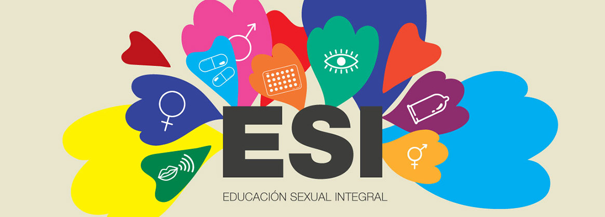

Cuando se habla del derecho a la Educación, también se incluye la Educación Sexual Integral que forma parte de este derecho así como otras materias como Matemáticas, Lenguaje, Ciencias Sociales, etc. En el caso puntual de la Educación Sexual Integral, la misma constituye un Humano en sí mismo, porque nos asegura que podamos acceder a otros derechos humanos en igualdad: es indispensable para acceder a la salud, al derecho a la información, al cuidado del propio cuerpo y a tomar decisiones informadas y libres sobre nuestros derechos sexuales y reproductivos.
¡Tan importante es este Derecho Humano que el derecho internacional tiene normas sobre el derecho a la Educación Sexual Integral! Por ejemplo, el Pacto Internacional de Derechos Económicos, Sociales y Culturales, que está incorporado a nuestro derecho interno porque tiene jerarquía constitucional, protege el derecho al más alto nivel posible de salud física y salud mental en su artículo 12 y también el derecho a la educación (art. 13). También, el órgano de interpretación e implementación de este Tratado Internacional, que es el Comité de Derechos Económicos, Sociales y Culturales interpreta que el derecho a la salud “no solo abarca la atención de salud oportuna y apropiada sino también los principales factores determinantes de la salud”, entre las que destaca el “acceso a la educación e información sobre cuestiones relacionadas con la salud, incluida la sexual y reproductiva”.
La sexualidad no es sólo el funcionamiento sexual, tiene que ver con el autocuidado y la preocupación por el otro, con la comunicación y la madurez física, cognitiva y emocional. La pubertad y la adolescencia son etapas difíciles para los chicos tanto como para sus padres. Rebeldía y desafíos son arduos de sobrellevar sin una buena comunicación y en general, la decisión de tener relaciones sexuales los adolescentes la toman sin consultar con los adultos. Esto tiende a aumentar tanto el riesgo de embarazo como las enfermedades de transmisión sexual cuanto menor es la edad, el nivel socioeconómico, la comunicación en el hogar y el nivel educativo.
Un tercio de los adolescentes se inicia sin prevención es por ello que los adolescentes necesitan confrontar con los adultos que los rodean a fin de crecer y desarrollarse autónomamente. Pero además son necesarios sostén, continuidad de cuidados en el hogar, y límites para sentirse queridos y aumentar su estima personal. “El rol de la familia es fundamental en el desarrollo sexual y si bien hablar de sexualidad no es siempre fácil y si aparece como tema tabú puede surgir más de un riesgo. En aspectos referidos a la sexualidad la consulta en la adolescencia temprana esta en general motivada por inquietudes de los padres. En la adolescencia tardía algunas jóvenes buscan orientación sobre métodos anticonceptivos, acuden al médico de adolescentes o a la ginecóloga”, explica la Dra. Diana Pasqualini, Médica Asociada a Halitus Instituto Médico.
Una vez iniciada la vida sexual es importante el seguimiento clínico y ginecológico. En ocasiones el cuidado insuficiente puede tener como consecuencia un embarazo y/o infecciones de transmisión sexual y a veces aparecen malestares relacionados con vivencias desagradables relacionadas con el acto sexual. Presiones, violencias, arrepentimientos son temas que pocas veces pueden referir.
QUE TODAS LAS PERSONAS, TIENEN DERECHO A RECIBIR EDUCACIÓN SEXUAL INTEGRAL EN LOS ESTABLECIMIENTOS EDUCATIVOS PÚBLICOS, DE GESTIÓN ESTATAL Y PRIVADA DE LAS JURISDICCIONES NACIONAL, PROVINCIAL, DE LA CIUDAD AUTÓNOMA DE BUENOS AIRES Y MUNICIPAL. CREACION Y OBJETIVOS DE DICHO PROGRAMA.